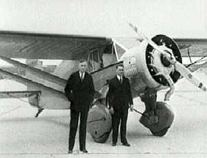
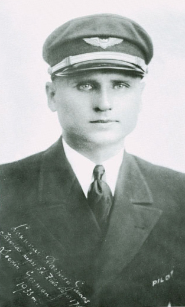
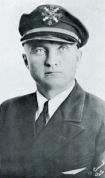

Sparnuoti lietuviai
1933 m. liepos 15 d. Steponas Darnos kartu su Stasiu Girėnu pakilo il Niujorko Lituanicos lėktuva skrydžiui į Lietuvą.

Steponas Darius
 Steponas Diarius (1896-1933) gime 1896 m. sausio 8d. Rubiškes vienkiemyje - dabar Dariaus kaimas Klaipedos rajone. Nuo 1907 m. gyveno JAV. Aktyviai sportavo, žaide beisbolą, regbį, futbolą, krepšinį,
boksavosi.
1917 m. įstojo į JAV kariuomenę, dalyvavo I pasauliniame kare.
1919 m. studijavo Čikagos universitete.
1920 m. metė studijas ir grįžo į Lietuvą.
1921 m. baige Kauno karo mokyklą.
1922-1927 m. tarnavo karo aviacijoje.
1923 m. dalyvavo Klaipėdos sukilime, užėmė su savo grupe Šilutę. Dalyvavo derybose del Klaipėdos krašto su
Antantes atstovais:
1922-1926 m. buvo vienas Lietuvos fizinio lavinimo sąjungos, sporto, futbolo ir beisbolo lygų vadovu. Išleido 3 knygas apie sportą.
1927 m. išvyko į JAV, gavo tarptautinio lakūno piloto pažymėjimą, ištarnavo kapitono laipsnį.
1928 m. gavo licenciją skradinti keleivius.
Stasys Girėnas
 Stasys Girėnas (1893-1933) game 1893 m. spalio 4 d. Vytogalos kaime Šilalės rajone.
1917-1919 tarnavo JAV karo aviacijos mechaniku.
1921 m. organizavo takai bendrovę.
1924 m. nusipirko trivietį lėktuvą.
1931 m. gave transporto ploto licenciją vežioti keleivius ir prekes. Pradejo dirbti civilines aviacijos transporto plotu. 1932 m pavasarį sulauke Stepono Daraus pasiūlymo drauge įsigyti lektuvą ar skristi per Atlantą iš Najorko į Kauną